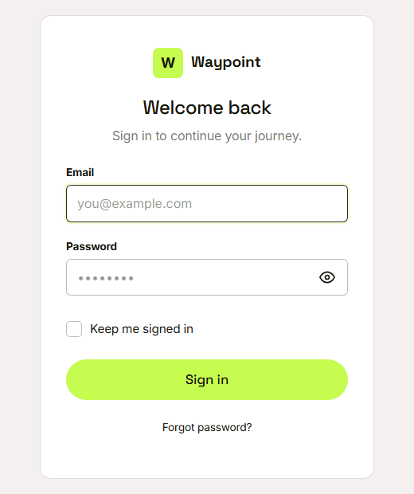
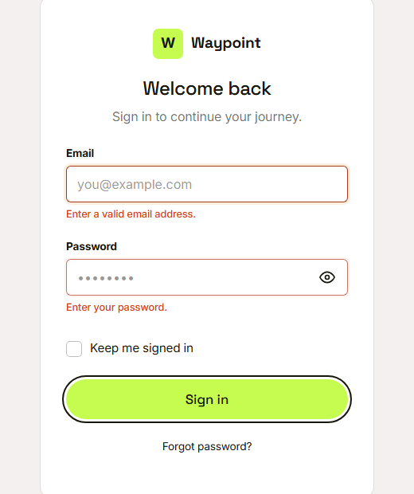
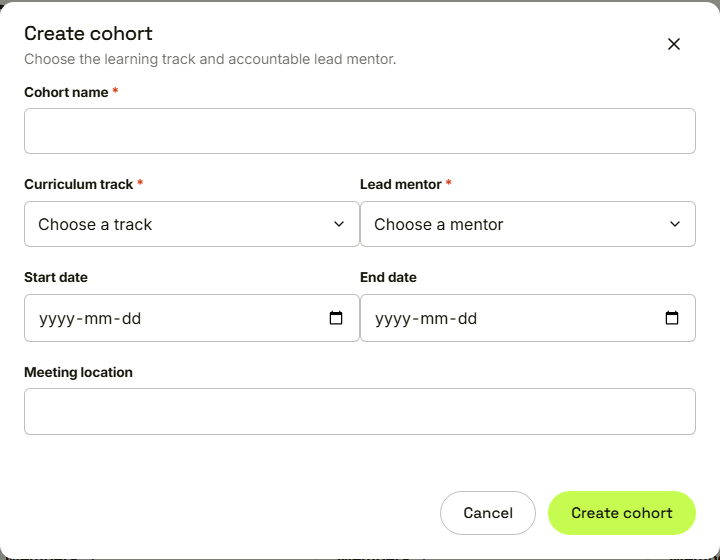
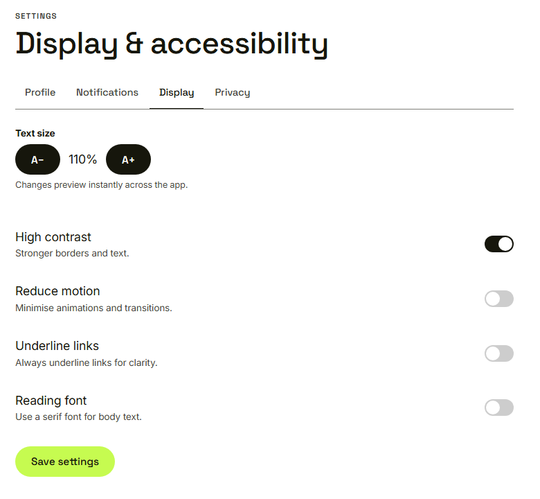

Waypoint · Video 105
Accessible to everyone
Keyboard, screen reader, large text and strong contrast
You can always see where you are

A clear focus outline on the email box
Words as well as colour

Red boxes, plus a sentence under each
Dialogs keep focus inside

Tab cycles inside; Escape closes and returns focus
Display and accessibility

Text size, high contrast, reduced motion, underlined links, reading font
Things to remember
- Everything works with the keyboard, and focus is always visible
- Every field has a label; colour never carries meaning alone
- Dialogs keep focus inside and give it back on close
- Text size, contrast and motion can be adjusted